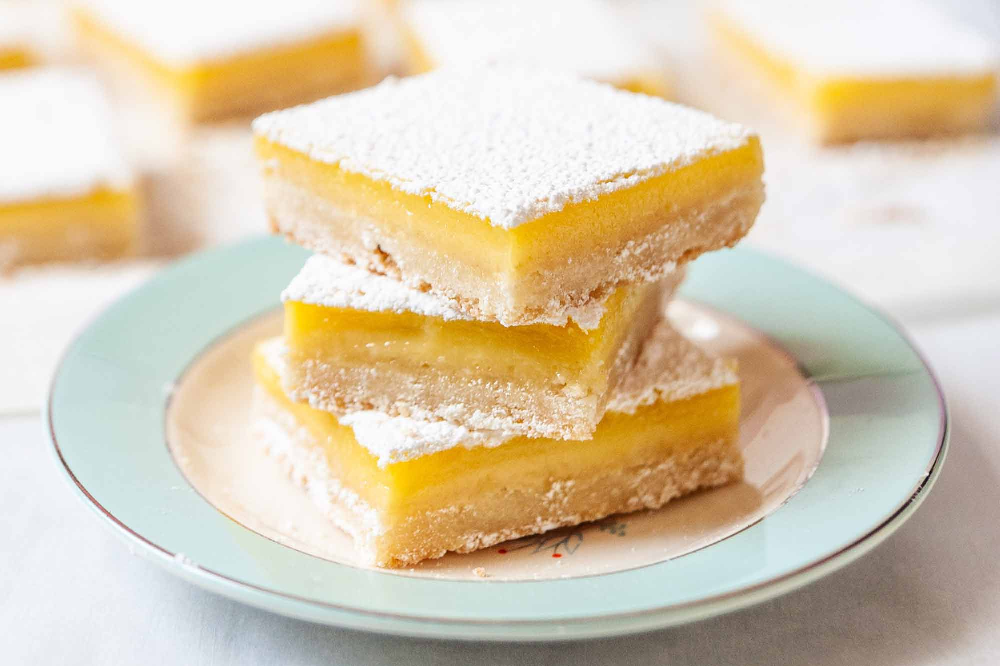

Lemon Bars

Tangy desert for the Summer!
Crust Ingredients
- 1/2 pound unsalted butter,
at room temperature
- 1/2 cup granulated sugar
- 2 cups flour
- 1/8 teaspoon kosher salt
Filling Ingredients
- 6 extra-large eggs at room temperature
- 3 cups granulated sugar
- 2 tablespoons grated lemon zest (4 to 6 lemons)
- 1 cup freshly squeezed lemon juice
- 1 cup flour
- Confectioners' sugar, for dusting
Directions
- Preheat the oven to 350 degrees F.
- For the crust, cream the butter and sugar until light in the bowl of an electric mixer fitted with the paddle attachment. Combine the flour and salt and, with the mixer on low, add to the butter until just mixed. Dump the dough onto a well-floured board and gather into a ball. Flatten the dough with floured hands and press it into a 9 by 13 by 2-inch baking sheet, building up a 1/2-inch edge on all sides. Chill.
- Bake the crust for 15 to 20 minutes, until very lightly browned. Let cool on a wire rack. Leave the oven on.
- For the filling, whisk together the eggs, sugar, lemon zest, lemon juice, and flour. Pour over the crust and bake for 30 to 35 minutes, until the filling is set. Let cool to room temperature.
- Cut into triangles and dust with confectioners' sugar.